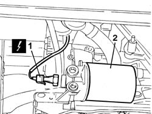
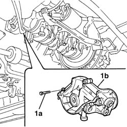
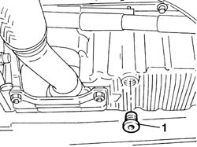
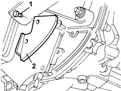
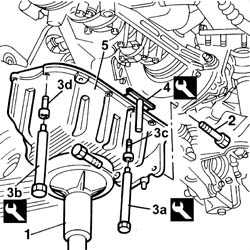
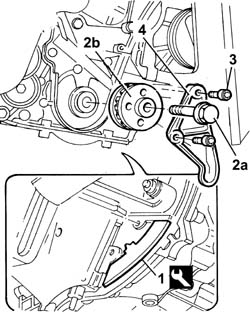
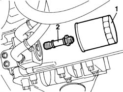
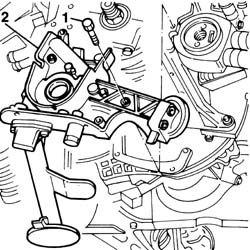
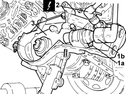

1020D14 front crank shaft oil seal cover - r + r and replace seals for versions with oil pump on crank shaft, timing side
- Path
- Procedures > 10 ENGINE > 1020 CRANKCASE SUMP AND COVERS > 1020D OIL SEALS ON CRANKSHAFT > 1020D14 front crank shaft oil seal cover - r + r and replace seals for versions with oil pump on crank shaft, timing side
- Kind
- repair procedure (removal / refitting; the operation number is the code)
- Applies to
- engines: 1.2 8v, 1.4 8v, 1.9 JTD 8V, 1.9 DIESEL; all production periods
- Interactive page
- https://sloeber94.github.io/elrnDB-fDbl/en/#/2584174
Applies to: engines: 1.2 8v; all production periods
 Removing
Removing
 Refitting
RefittingPosition the vehicle on a lift.
Op. 7055B54 PROTECTION/GUARD UNDER ENGINE - R.R.
Op. 1048A10 AIR FILTER ASSEMBLY - R.R.
Op. 1032D12 TIMING SYSTEM PROTECTIVE COVER(S) - R + R
Op. 4450B04 RIGHT FRONT WHEEL - R.R.
Op. 1092B60 ALTERNATOR DRIVE BELT - R + R
Op. 1092A10 CRANKSHAFT PULLEY - R + R
Op. 1032B10 TOOTHED TIMING BELT - R + R FOR TIMING ADJUSTMENT OR REPLACEMENT
Op. 2110A60 MANUAL GEARBOX/ENGINE COUPLING BRACKET - R+R
Op. 1032B44 TOOTHED DRIVE PULLEY - R + R WITH TIMING BELT REMOVED
Op. 1020A30 ENGINE OIL DRAIN PLUG - REPLACE
Op. 1020A20 CRANKCASE OIL SUMP - R + R CLEAN SEALS FOR SEALANT APPLICATION
Op. 1084B28 ENGINE OIL INTAKE PUMP - R + R WITH CRANKCASE SUMP REMOVED
Op. 1088C14 WATER PUMP - R + R WITH DRIVE BELT(S) REMOVED
1. Connect the electrical connection for the engine oil pressure switch.
Description | Connector | |
|---|---|---|
1 | Insufficient engine oil pressure sensor (switch) |
2. Undo and remove the engine oil filter.

Applies to: engines: 1.2 8v; all production periods
1. Undo the fixing bolts (1a) and remove the front oil pump casing cover (1b).

Applies to: engines: 1.2 8v; all production periods
Refitting
RemovingFit the front crankcase cover on the cylinder block/crankcase.
Tighten the bolts fixing the front cover to torque.
Fastening | Component | dia | Value (daNm) | |
|---|---|---|---|---|
- | Bolt | FRONT COVER CRANKSHAFT | M6 | (Cylinder block/crankcase) 1 |
Tighten the oil filter by hand.
Connect the electrical connection for the engine oil pressure switch.
Description | Connector | |
|---|---|---|
- | Insufficient engine oil pressure sensor (switch) |
Op. 1088C14 WATER PUMP - R + R WITH DRIVE BELT(S) REMOVED
Op. 1084B28 ENGINE OIL INTAKE PUMP - R + R WITH CRANKCASE SUMP REMOVED
Op. 1020A20 CRANKCASE OIL SUMP - R + R CLEAN SEALS FOR SEALANT APPLICATION
Op. 1020A30 ENGINE OIL DRAIN PLUG - REPLACE
Op. 1032B44 TOOTHED DRIVE PULLEY - R + R WITH TIMING BELT REMOVED
Op. 2110A60 MANUAL GEARBOX/ENGINE COUPLING BRACKET - R+R
Op. 1032B10 TOOTHED TIMING BELT - R + R FOR TIMING ADJUSTMENT OR REPLACEMENT
Op. 1092A10 CRANKSHAFT PULLEY - R + R
Op. 1092B60 ALTERNATOR DRIVE BELT - R + R
Op. 4450B04 RIGHT FRONT WHEEL - R.R.
Op. 1048A10 AIR FILTER ASSEMBLY - R.R.
Op. 0010T11 ENGINE OIL - CHECK LEVEL AND TOP UP
Op. 7055B54 PROTECTION/GUARD UNDER ENGINE - R.R.
Remove the vehicle from the lift.
Applies to: engines: 1.9 DIESEL; all production periods
Removing
RefittingOp. 7055B54 PROTECTION/GUARD UNDER ENGINE - R.R.
Op. 4450B04 RIGHT FRONT WHEEL - R.R.
Op. 1092G10 SINGLE ENGINE BELT - R.R.
Op. 1032D12 TIMING SYSTEM PROTECTIVE COVER(S) - R + R
Op. 1032B10 TOOTHED TIMING BELT - R + R FOR TIMING ADJUSTMENT OR REPLACEMENT
Op. 1032C43 TIMING BELT TENSIONER MOUNTING - R.R. WITH TIMING BELT REMOVED
Op. 1076B50 EXHAUST PIPE ATTACHMENT TO ENGINE/MANIFOLD - R + R
Position a suitable container for collecting the engine oil.
1. Undo the plug and drain the engine oil into the container positioned previously.

Applies to: engines: 1.9 DIESEL; all production periods
1. Undo the retaining bolts.
2. Position the flywheel guard.

Applies to: engines: 1.9 DIESEL; all production periods
1. Position a hydraulic column lift underneath the engine oil sump.
2. Undo the lower bolts fixing the engine oil sump to the gearbox-differential unit.
3. Remove the plugs on the flywheel guard and use tools (3a) and (3b) to unscrew the front and rear bolts (3c) and side bolts (3d) securing the oil sump to the crankcase.
4. Use the tool to cut the strip of silicone sealant between the sump and crankcase.
5. Remove the engine oil sump.
Description | Code | |
|---|---|---|
3a | Spanner | 1.860.834.000 |
Description | Code | |
|---|---|---|
3b | Spanner | 1.860.833.000 |
Description | Code | |
|---|---|---|
4 | Blade | 1.870.718.000 |

Applies to: engines: 1.9 DIESEL; all production periods
Undo the retaining bolts and remove the flywheel guard.
1. Position the flywheel lock.
2. Undo the fixing bolt (2a) and remove the pulley (2b).
Description | Code | |
|---|---|---|
1 | Counter-torque | 1.860.898.000 |
3. Undo the retaining bolts.
4. Remove the mounting shown.

Applies to: engines: 1.9 DIESEL; all production periods
1. Remove the cartridge oil filter from the heat exchanger.
2. Remove the pin securing the heat exchanger to the oil pump front cover.

Applies to: engines: 1.9 DIESEL; all production periods
1. Undo the retaining bolts.
2. Remove the engine oil seal front cover with engine oil intake chamber.
Recover the gasket under the front cover.

Applies to: engines: 1.9 DIESEL; all production periods
Refitting
RemovingPosition the new cover gasket on the crankcase.
Position the engine oil seal front cover with engine oil intake chamber.
Tighten the fixing bolts to torque.
Fastening | Component | dia | Value (daNm) | |
|---|---|---|---|---|
- | Bolt | FRONT COVER CRANKSHAFT | M6 | (Cylinder block/crankcase) 0.9 |
Position the heat exchanger on the oil pump front cover and tighten the fastening pin.
Hand-tighten the oil filter cartridge.
Finish tightening the oil filter by turning it through a further 270 (3/4 turn).
Fit the mount and tighten the bolts to the oil pump front cover.
Position the pulley in the special housing on the crankshaft.
Tighten the fixing bolt to torque.
Fastening | Component | dia | Value (daNm) | |
|---|---|---|---|---|
- | Left hand bolt | DRIVE PULLEY(PULLEYS) TIMING | M16 | 34 |
Remove the engine flywheel lock and fit the flywheel guard.
Description | Code | |
|---|---|---|
- | Counter-torque | 1.860.898.000 |
Clean the surfaces of the oil sump and the engine crankcase thoroughly completely removing the remaining sealant.
Apply silicon sealant to the entire perimeter of the oil sump.
Type | Component | Description | Qty. | |
|---|---|---|---|---|
- | Silicon sealant | ENGINE OIL SUMP | Arexon RHODORSIL 5552 | - |
Position the crankcase sump in its seat.
Tighten the front and rear bolts to torque using an appropriate wrench.
Description | Code | |
|---|---|---|
- | Spanner | 1.860.834.000 |
Fastening | Component | dia | Value (daNm) | |
|---|---|---|---|---|
- | Bolt | ENGINE OIL SUMP | M8 | (Cylinder block/crankcase) 2.5 |
Tighten the side bolts to torque using an appropriate wrench.
Description | Code | |
|---|---|---|
- | Spanner | 1.860.833.000 |
Fastening | Component | dia | Value (daNm) | |
|---|---|---|---|---|
- | Bolt | ENGINE OIL SUMP | M6 | (Cylinder block/crankcase) 0.9 |
Tighten the two bolts fixing the sump to the gearbox-differential unit to torque.
Fastening | Component | dia | Value (daNm) | |
|---|---|---|---|---|
- | Bolt | MANUAL GEARBOX/DIFFERENTIAL | M10 X 1.25 | (Joint to oil sump) 5 |
Fit the plugs of the sump side fastenings to the gearbox.
Fit the flywheel guard.
Tighten the lower bolt fixing the engine oil dipstick pipe.
Tighten the engine oil sump plug to torque.
Fastening | Component | dia | Value (daNm) | |
|---|---|---|---|---|
- | Plug | ENGINE OIL DRAIN PLUG | M18 x 1.5 | 2 |
Op. 1076B50 EXHAUST PIPE ATTACHMENT TO ENGINE/MANIFOLD - R + R
Op. 1032C43 TIMING BELT TENSIONER MOUNTING - R.R. WITH TIMING BELT REMOVED
Op. 1032B10 TOOTHED TIMING BELT - R + R FOR TIMING ADJUSTMENT OR REPLACEMENT
Op. 1032D12 TIMING SYSTEM PROTECTIVE COVER(S) - R + R
Op. 1092G10 SINGLE ENGINE BELT - R.R.
Op. 4450B04 RIGHT FRONT WHEEL - R.R.
Applies to: engines: 1.9 JTD 8V; all production periods
This operation cannot be carried out in the vehicle. Work with the engine at the bench, therefore, following the instructions in
Applies to: engines: 1.4 8v; all production periods
Removing
RefittingOp. 0010T12 ENGINE OIL AND FILTER - REPLACE
Op. 2110A60 MANUAL GEARBOX/ENGINE COUPLING BRACKET - R+R
Op. 1020A20 CRANKCASE OIL SUMP - R + R CLEAN SEALS FOR SEALANT APPLICATION
Op. 1084B28 ENGINE OIL INTAKE PUMP - R + R WITH CRANKCASE SUMP REMOVED
Op. 1084B30 ENGINE OIL FILTER - R.R.
Op. 1048A10 AIR FILTER ASSEMBLY - R.R.
Op. 1032D26 TIMING SYSTEM FRONT PROTECTIVE COVER (UPPER PART) - R.R.
Op. 1092B60 ALTERNATOR DRIVE BELT - R + R
Op. 1092A10 CRANKSHAFT PULLEY - R + R
Op. 1032D27 TIMING SYSTEM FRONT PROTECTIVE COVER (LOWER PART) - R.R.
Op. 1008B10 FLEXIBLE MOUNTING FOR POWER UNIT FRONT SUPPORT (TIMING SIDE) - REPLACE
Op. 1008A46 TIMING SIDE POWER UNIT RIGID SUPPORT -R.R.
Op. 1056B82 INJECTION/IGNITION SYSTEM E.C.U. (ONE) - R + R
Op. 1056B87 IGNITION/INJECTION SYSTEM CONTROL UNIT SUPPORT - R.R.
Op. 5510C14 IGNITION COIL/S - R+R
Op. 1016A20 SINGLE TAPPET COVER -R.R AND REPLACE GASKET
Op. 1032B10 TOOTHED TIMING BELT - R + R FOR TIMING ADJUSTMENT OR REPLACEMENT
Op. 1032B44 TOOTHED DRIVE PULLEY - R + R WITH TIMING BELT REMOVED
1. Undo the bolt (1a) and remove the engine rpm sensor (1b).
2. Disconnect the electrical connection for the minimum engine oil pressure switch.
Description | Connector | |
|---|---|---|
2 | Insufficient engine oil pressure sensor |
- Remove the gasket.

Applies to: engines: 1.4 8v; all production periods
Refitting
Removing- Place the crankshaft front cover in its seat complete with gasket and tighten the bolts to the recommended torque.
Value daNm | Fastening | Component | dia | |
|---|---|---|---|---|
- | 0.8 ÷ 1.0 | Bolt | Crankshaft oil seal front cover | M6 |
- Connect the electrical connection for the minimum engine oil pressure switch.
- Position the engine rpm sensor in its housing and secure it using the bolt.
Op. 1032B44 TOOTHED DRIVE PULLEY - R + R WITH TIMING BELT REMOVED
Op. 1032B10 TOOTHED TIMING BELT - R + R FOR TIMING ADJUSTMENT OR REPLACEMENT
Op. 1016A20 SINGLE TAPPET COVER -R.R AND REPLACE GASKET
Op. 5510C14 IGNITION COIL/S - R+R
Op. 1056B87 IGNITION/INJECTION SYSTEM CONTROL UNIT SUPPORT - R.R.
Op. 1056B82 INJECTION/IGNITION SYSTEM E.C.U. (ONE) - R + R
Op. 1008A46 TIMING SIDE POWER UNIT RIGID SUPPORT -R.R.
Op. 1008B10 FLEXIBLE MOUNTING FOR POWER UNIT FRONT SUPPORT (TIMING SIDE) - REPLACE
Op. 1032D27 TIMING SYSTEM FRONT PROTECTIVE COVER (LOWER PART) - R.R.
Op. 1092A10 CRANKSHAFT PULLEY - R + R
Op. 1092B60 ALTERNATOR DRIVE BELT - R + R
Op. 1032D26 TIMING SYSTEM FRONT PROTECTIVE COVER (UPPER PART) - R.R.
Op. 1048A10 AIR FILTER ASSEMBLY - R.R.
Op. 1084B30 ENGINE OIL FILTER - R.R.
Op. 1084B28 ENGINE OIL INTAKE PUMP - R + R WITH CRANKCASE SUMP REMOVED
Op. 1020A20 CRANKCASE OIL SUMP - R + R CLEAN SEALS FOR SEALANT APPLICATION
Topics linked from this page (29)
- 0010T11 engine oil check level and top up
- 0010T12 engine oil and filter replace
- 1008a46 cam shaft left rigid mount - r r
- 1008b10 power unit front mount (timing side) flexible block - replace
- 1016A20 single cam cover - r + r and replace gasket
- 1020A20 crank case oil sump - r + r clean seals for sealant application
- 1020A30 engine oil drain plug - replace
- 1020D17 engind front cover - r r
- 1032B10 toothed timing belt - r + r for timing adjustment or replacement
- 1032B44 toothed drive pulley - r + r with timing belt removed
- 1032C43 timing belt tensioner mount - r r with timing belt removed
- 1032D12 timing system protective cover(s) - r + r
- 1032D26 TIMING SYSTEM FRONT PROTECTIVE COVER (UPPER PART) - R.R.
- 1032D27 TIMING SYSTEM FRONT PROTECTIVE COVER (LOWER PART) - R.R.
- 1048A10 air cleaner filtering element - replace
- 1056B82 injection/ignition system e.c.u. (one) - r + r
- 1056B87 ignition/injection system control unit mount - r r
- 1076B50 exhaust pipe attachment to engine - r + r
- 1084B28 engine oil intake pump - r + r with crankcase sump removed
- 1084B30 engine oil filter r r
- 1088C14 water pump - r + r with drive belt removed
- 1092A10 Crankshaft services PULLEY - R.R.
- 1092B60 alternator drive belt - r + r
- 1092G10 single engine belt r r
- 2110a60 manual gearbox/engine coupling bracket - r+r
- 4450B04 right front wheel r r
- 5510C14 ignition coil/s - r+r
- 7055B54 under-engine guard - r r
- K030 ENGINE OIL PRESSURE SENSOR (SWITCH)